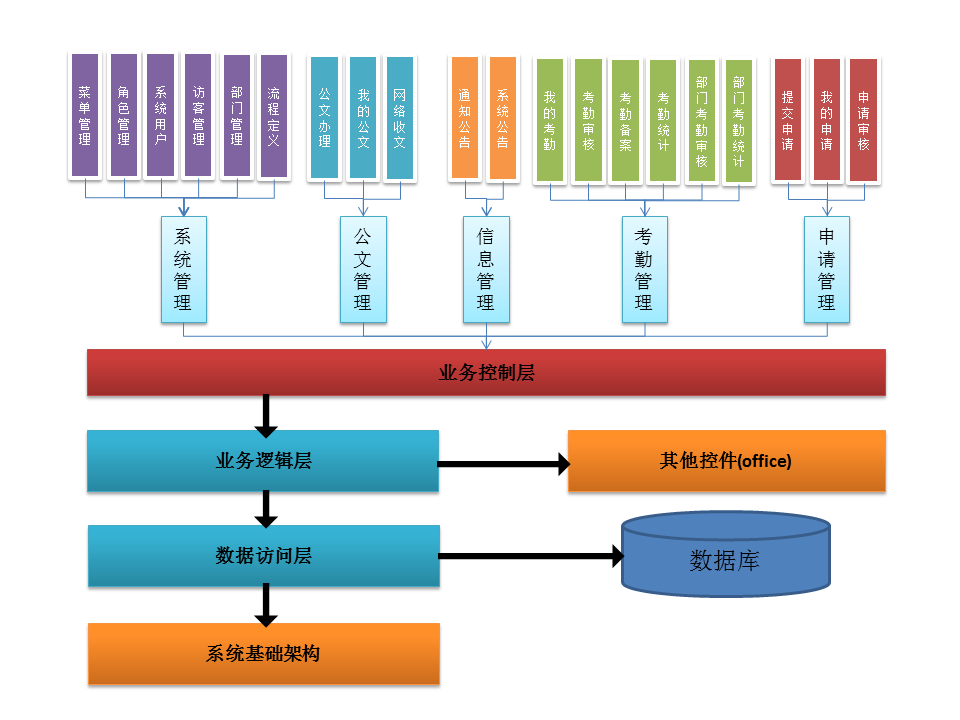

交通行业协同办公系统解决方案
我国各级政府机构正在利用计算机和网络等高新技术，将其办公环境、管理和服务职能迁移到网络上去完成，从而超越时间、空间和部门分隔等的限制，向全社会提供高效、优质、规范、透明和全方位的服务，全面实现政府职能从管理型向服务型的转变。
在这种转变过程中，传统的办公OA系统曾经为公文自动流转、办公效率提高作出了贡献。但是，越来越难以适应电子政务新的变化和更高的要求。祯祥智能改进后的OA系统可完美解决新型办公要求。
系统功能:

政务流程全面定制，工作公文流畅运转
利用工作流引擎的、强大的图形化定制能力，快速创建和优化党政机关政务流程（包括收发文流程）。自动分发各种电子化公文（行政文、挂签文、领导批示、签报、通知等）到相关人员的系统中，并记录全部的执行过程。辅以电子邮件和即时短信，各级领导和办公人员流畅协作，时空无阻，大幅提升全员工作效率。
工作效能实时监察，信息访问安全可靠
专门的效能监察功能，可以从多个角度查看公文的状态，监控公文的执行情况，并且能够根据各个公文的状态加以标识，更容易区分传阅，加急等不同公文状态的公文。对公文等政务资源进行电子化管理，大大减少手工操作的繁琐和人为失误的可能。集中存储、身份识别、功能授权、数据授权等多种安全机制，保障信息的可靠性和安全性。
建设大政务平台，分层管控和协同
如果具有多个下属机构，或者需要进行跨机关的公文和任务流转，可以部署多套分支系统，每个系统可以独立运行，支持内部的无缝写作，满足自身的政务需求。通过各个OA系统接口的对接，还可以实现跨系统的传递领导指示、往来公文、请示汇报等多种公文类型，并全面记录政务运转过程。
系统特点：
标准化:严格按照国家相关的公文标准规范要求进行公文管理及审政审批功能的开发；
先进性:系统采用大量先进的技术和体系结构，采用最先进的开发工具：XML、Web Services、Visual Studio.Net、ORM工具；
功能完善性:系统实现了公文管理、资源管理、邮件服务、资讯中心、移动办公等当前实用的功能；
系统间可关联可独立:各模块之间可以根据用户的需要即可独立运行，也可关联运行。通过标准、通用的数据交换接口，方便实现系统间数据交换；
严格的权限控制:系统管理级用户可以对任何界面的任何功能进行操作；部门级用户只能对本部门的功能进行操作；审核级用户具有对本职能部门的审核权限；浏览级用户只能对本部门的信息进行浏览；
强大的分析功能:用户可以根据需要，对数据进行各种分析，可以采用多种形式，从各个角度进行分析；
方便的数据维护:日常的数据维护和数据备份都有专门的管理程序管理、操作界面简单,系统管理员不熟悉计算机专业知识也可维护；
2015 © 河南祯祥智能工程有限公司. ALL Rights Reserved.